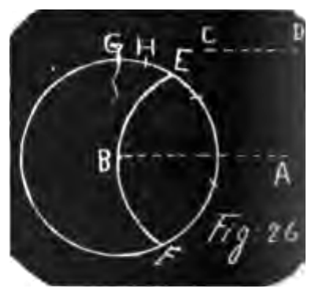
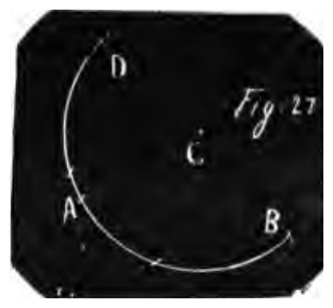

§§ 76–77: Alzare una perpendicolare all’estremo di una distanza¶
76. Prob. Dati i due punti \(A\) e \(B\); trovare un punto \(H\) tale, che la retta \(BH\) sia perpendicolare alla \(AB\) in \(B\) ed eguale ad una data \(CD\) (fig. 26).


Sol. Col centro \(B\), e colla distanza \(CD\) per raggio si descriva un cerchio \(FEHG\). Col centro \(A\), e colla distanza \(AB\) per raggio si descriva un arco, che tagli il cerchio in \(F\) ed \(E\). Si determini la semicirconferenza \(FEG\) (§ 64). Si divida in due egualmente l’arco \(GE\) in \(H\) (60). Sarà \(H\) il punto cercato.
Dim. Per la simiglianza de’ due triangoli \(GEB, EBA\) (§ 22) sarà l’angolo \(GEB = EBA\), e quindi \(GE\) parallela a \(BA\) (28, lib. I). Ma \(BH\), che divide in due egualmente l’angolo \(GBE\), è perpendicolare alla corda \(GE\) (9, 11, 12 lib. I). Dunque anche alla \(BA\) (28, lib. I). Ma è in oltre \(BH = CD\). Dunque \(H\) è il punto cercato.
Se la \(AB\) fosse troppo minore della \(CD\); si duplichi, o si triplichi ecc. (§ 64, 65).
77. Prob. Dati i due punti \(A\) e \(B\); trovare un punto \(D\) in guisa, che la \(DA\) sia perpendicolare alla \(AB\) (fig. 27).
Sol. Preso un raggio arbitrario (per esempio la stessa \(AB\));
f. 0068 · p. 43con esso, e coi due centri \(A\) e \(B\) si descrivano due archi, che si taglino in \(C\). Con questo stesso raggio, e col centro \(C\) si descriva la semicirconferenza \(BAD\) (§ 64). Sarà \(D\) il punto cercato.


Dim. L’angolo \(DAB\) è nel semicerchio. Dunque è retto (31, lib. III).